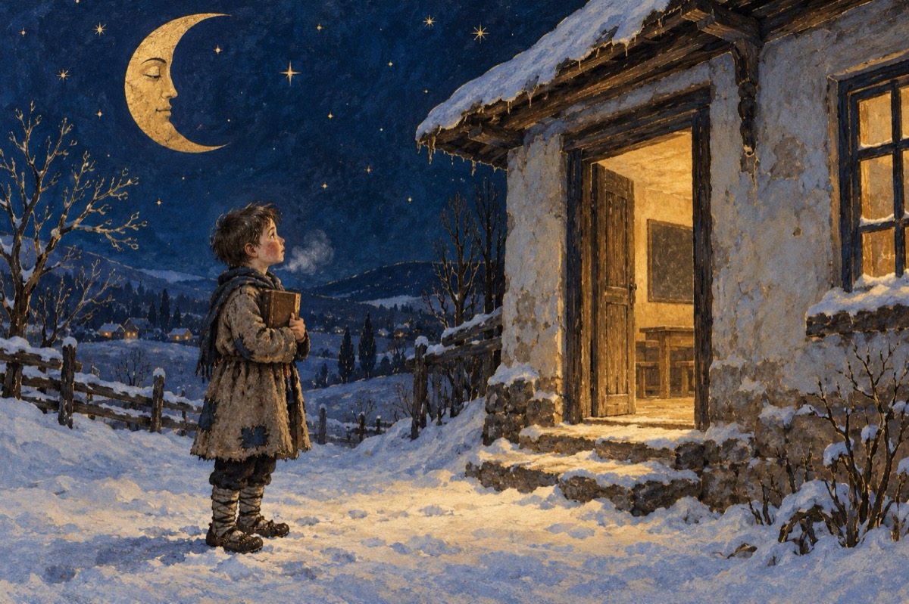

Moș Crăciune
De mic copil nimic nu ți-am cerut
De mic copil umblat-am în opincă
Pe tine eu te-am cunoscut
Ca MOȘ GERILĂ!
Atâta frig am îndurat,
De mic copil am fost orfan.
Nimic nu am sperat
Umblam la colindat să fac un ban
Vrut-am ca să-nvăț carte
De mic copil, ca prima oară,
Dorință realizată-n parte
Mergeam la câte-o casă părăsită, ca loc de școală
Lui MOȘ GERILĂ, ce puteam să-i cer?
Nici nu știam de ciocolată.
Când noi stăteam în frig și ger
Așa a fost copilăria toată.
Lui MOȘ GERILĂ ce să-i cer?
P.S.
Când MOȘ GERILĂ-a revenit
Printre copiii cei de-acum,
Constat că am îmbătrânit.
Dar eu mă joc cu ei pe drum,
Ce pot să-i cer lui MOȘ CRĂCIUN
Când sunt copil, dar și bătrân.
Ce pot să-i cer lui MOȘ CRĂCIUN?
Vasile Groza